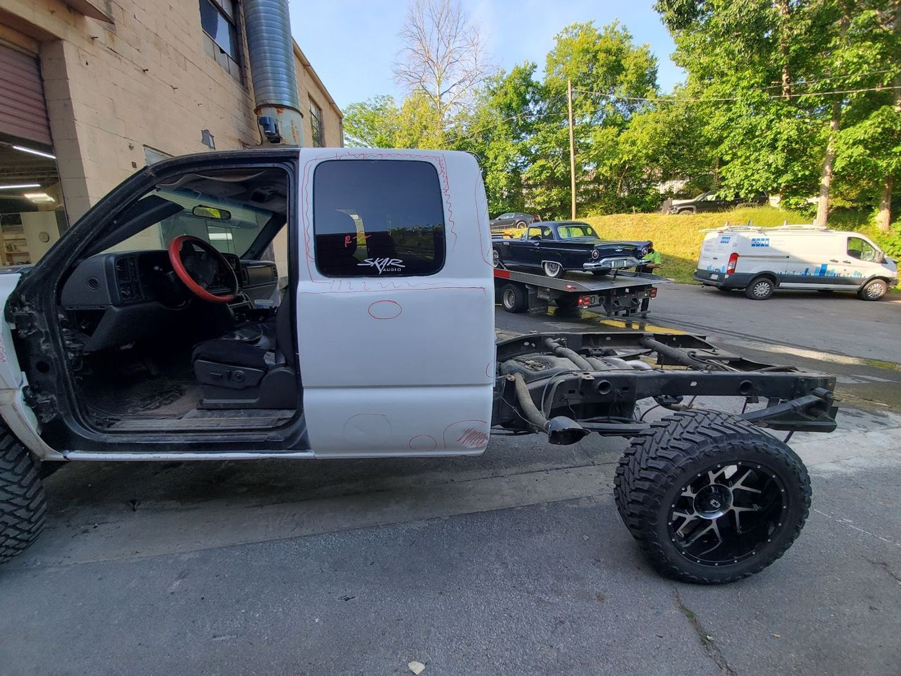
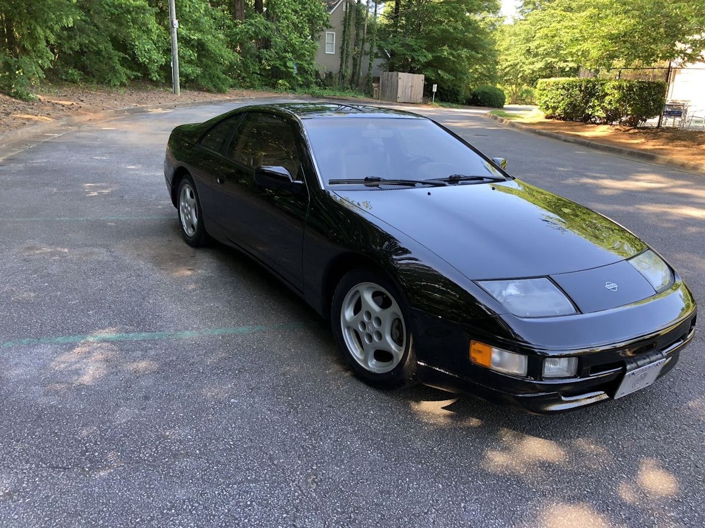
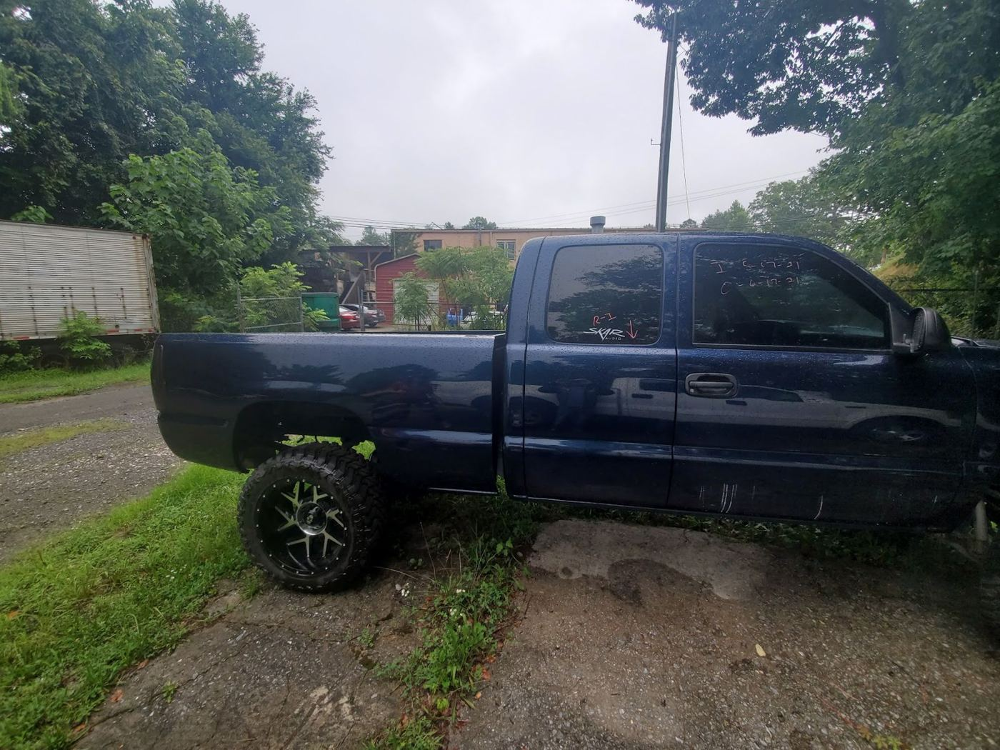
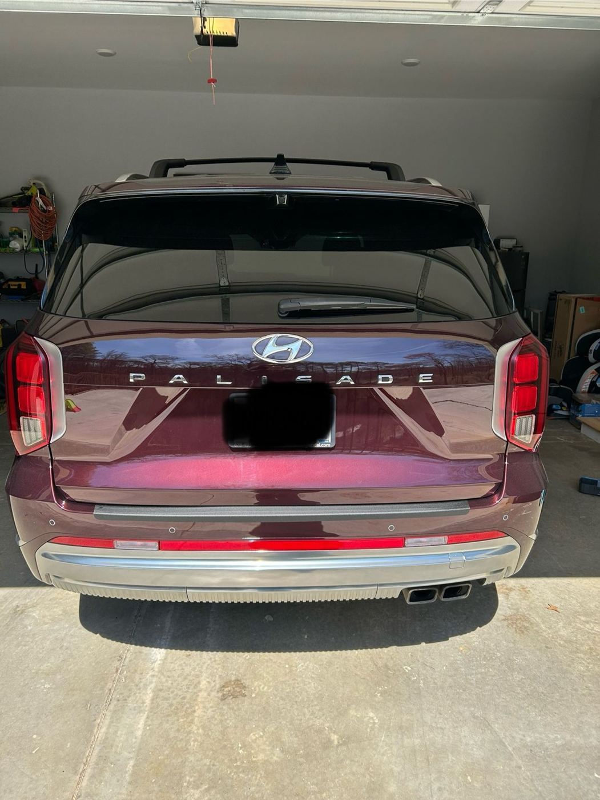
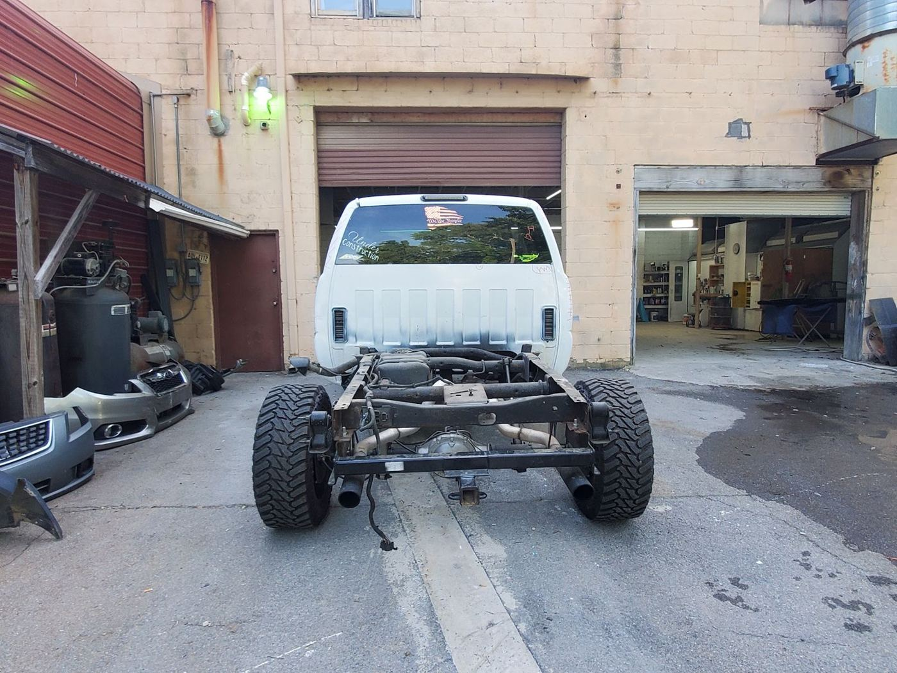
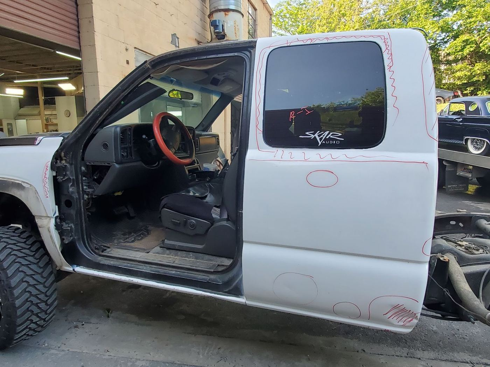
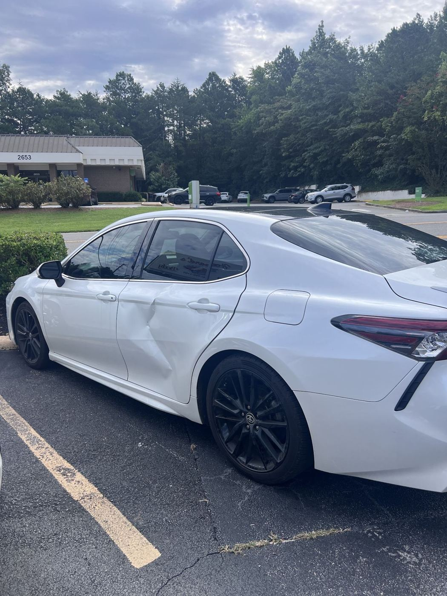
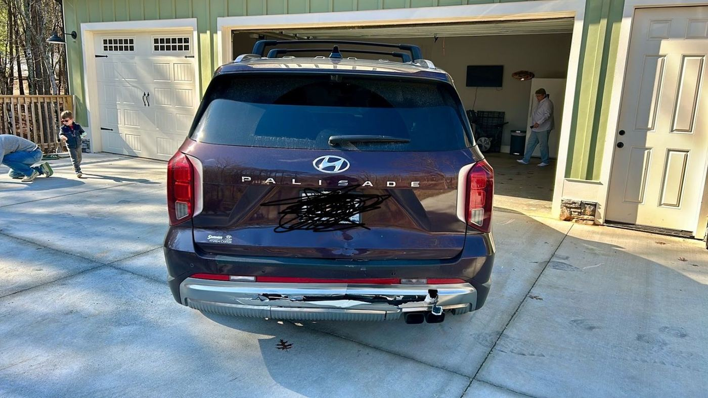

Collision & body repair · Canton, GA
Made right. Like new.
A body shop on Marietta Hwy that keeps you updated, deals with the insurance company and does the job properly.
4.9★ · 108 Google reviews
In the shop

Collision repairRear-ended? They fix it right and push for new parts instead of shortcuts.
Insurance claimsThe team will "go to battle" with the insurance company to get your car fixed properly.
Small repairsFrom a loose door handle to fog lights, with timely call-back quotes.
Constant updatesSteve keeps you informed, including any insurance delays.


Drivers say
Very friendly owner and staff. They were professional, efficient, and made my car look beautiful and as good as new after only two days in the shop!
I loved how quick and efficient the guys at howards auto body were with my car. Mr. Steve was very transparent and very nice through the whole thing. I dropped my car off Monday morning by the next Monday she was ready to go. thank you to the guys we’re handling my situation with grace and so fast. my car looks brand new.
My driver’s side door handle nearly came off in my hand. Who knew? While shopping around, I found Howard’s and spoke with Steve. The return call with a quote was timely and I like the price. After the initial visit to assess my needs, a date was set and the job was finished in less than an hour. Now mt fog lights need replacing and I’m dancing with the girl I brought. Thanks guys!
Get a quote
2650 Marietta Hwy, Canton, GA 30114-8213